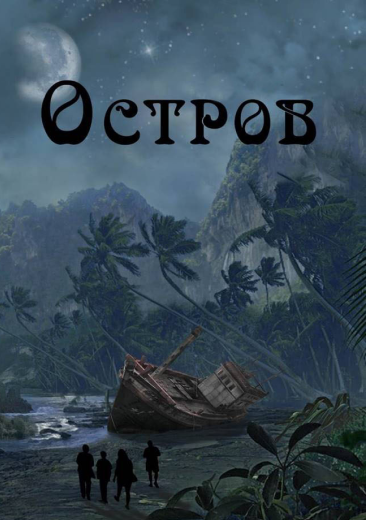

В светлом офисном кабинете шла громкая дискуссия. Тринадцать
человек, разделенные переговорным столом, не брезговали кидать
грубые словечки в адрес друг друга. Спор накалил обстановку до
предела. Заряженный воздух готов был засветиться от сотни мелких
молний, испускаемых людьми.
— Этот корабль не готов к длительным плаваниям! Вы хоть слышите
меня?! — один из собравшихся перешел на крик.
— Этот лайнер принесет нам миллионы! Слышите?! Миллионы! — всплеснул
руками мужчина и подошел к панорамному окну. Его глаза потемнели от
ярости и злобно сверлили сидящих за столом людей. — Это вам не
какая-нибудь «КАМА». Многие бизнес-сделки будут проведены именно на
нашем лайнере. Мы не можем упустить эту возможность...